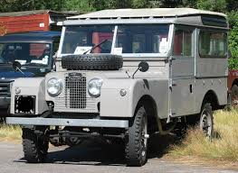
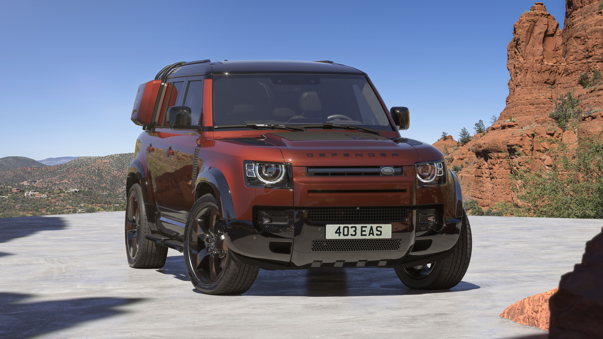
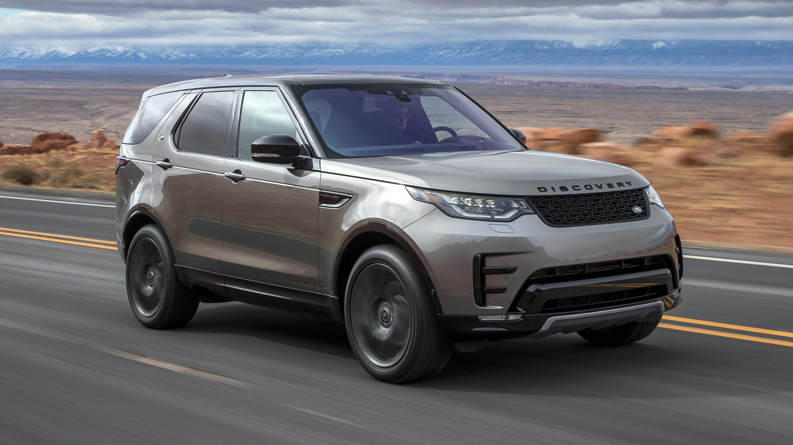
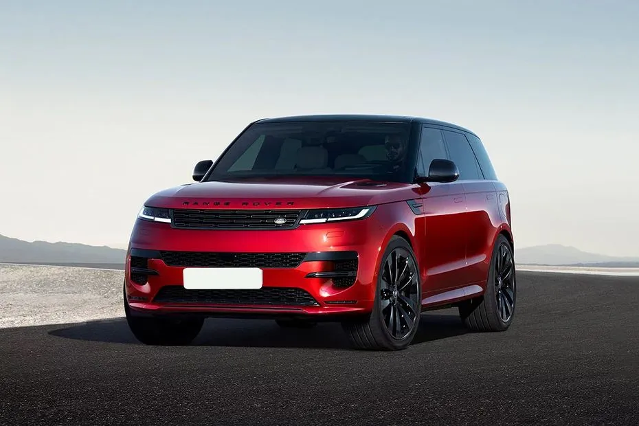
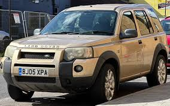
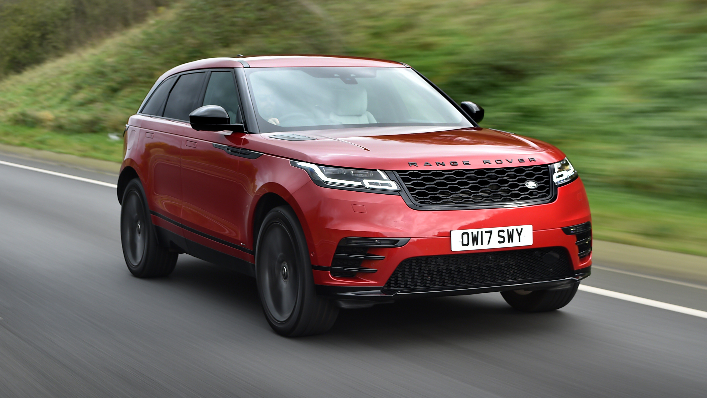
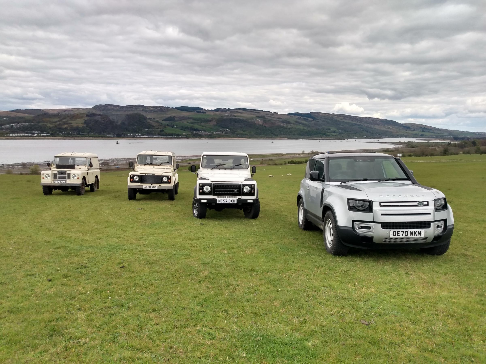
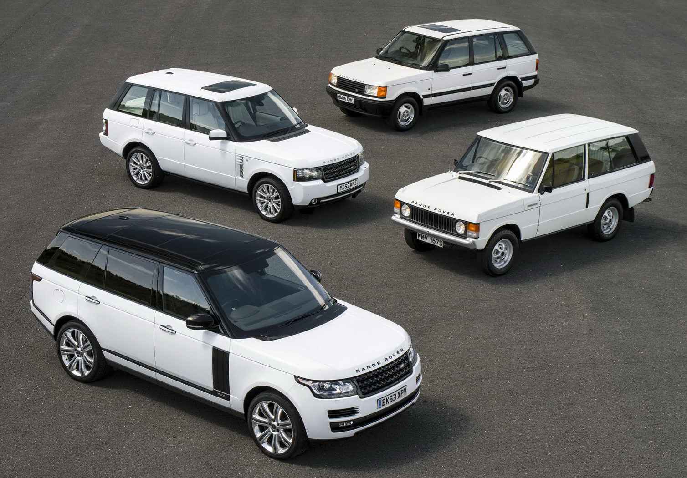
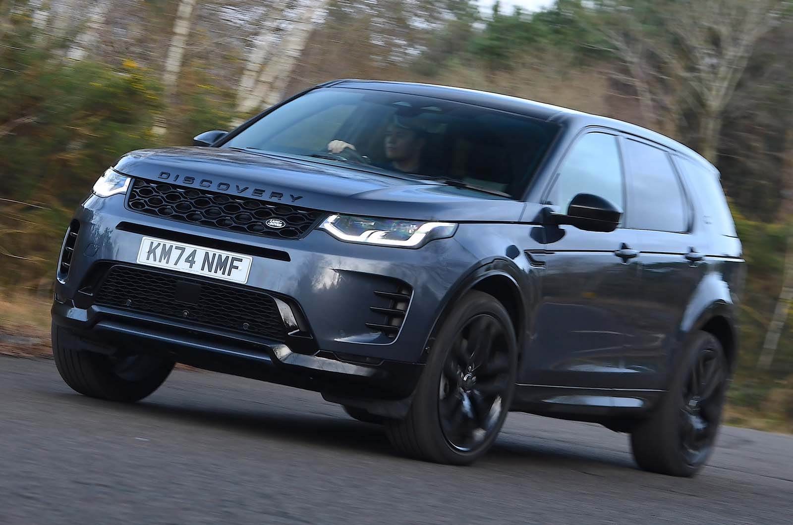

Land Rover
Above and Beyond
Founded: 1948
Country: UK
Icon: Defender
Off-Road Royalty
Above and Beyond
The Land Rover story begins in 1947 on a farm in Wales. Rover Company engineer Maurice Wilks used a surplus American Army Jeep on his farm and realized there was a market for a similar vehicle for agricultural and industrial use.
With steel rationed after WWII, Wilks designed a body from aluminum alloy – lightweight, rust-proof, and readily available from aircraft factories. The first Land Rover, the Series I, debuted at the 1948 Amsterdam Motor Show. It was an instant success.
The Series I was simple, rugged, and incredibly capable. It was designed as a working vehicle – farmers, forestry, military, and utility companies loved it. The Land Rover became the "go anywhere, do anything" vehicle.
The Series II (1958) and Series III (1971) refined the design but kept the same basic formula. In 1970, Land Rover changed the world with the Range Rover – the first luxury 4x4. It combined off-road capability with on-road comfort and style, creating the luxury SUV segment.
The 1989 Discovery expanded the lineup as a more affordable family off-roader. The 1997 Freelander brought Land Rover capability to a compact crossover.
BMW owned Land Rover briefly (1994-2000), then Ford took over. In 2008, Tata Motors bought Jaguar Land Rover and invested heavily in new models and technology.
The original Defender (a rebadged Series III) continued production until 2016, with minimal changes – a testament to its timeless design. A new Defender launched in 2020, modern while honoring the original.
Today, Land Rover offers the Defender, Discovery, Discovery Sport, Range Rover, Range Rover Sport, Range Rover Velar, and Range Rover Evoque – plus electrified variants. The brand remains the benchmark for off-road luxury.
"The Land Rover was designed to be a working vehicle, but it became so much more – an icon of British engineering."- Maurice Wilks

1948-1985
The original. Simple, rugged, and incredibly capable. The Series vehicles were working vehicles – farms, military, forestry. They built the Land Rover legend.

1983-2016, 2020-present
The ultimate off-roader. The original Defender (rebadged Series III) became an icon. The new Defender modernizes while retaining capability.
1970-present
The first luxury SUV. Combined off-road capability with on-road comfort and style. Created a segment and remains the benchmark.

1989-present
The family-friendly off-roader. Practical, spacious, and capable. The "Disco" has a loyal following.

2005-present
The performance SUV. Sharper handling, more aggressive styling, still luxurious and capable.

1997-2014
The compact crossover that brought Land Rover capability to a smaller, more affordable package.
2011-present
The fashion-forward compact SUV. Stunning design, premium interior, and surprising capability.

2017-present
The "avant-garde" Range Rover. Minimalist design, advanced technology, and elegant proportions.
The Defender is the direct descendant of the original Land Rover. For over 60 years, it remained fundamentally unchanged – a testament to its brilliant design.
The original Defender was beloved by farmers, explorers, military, and enthusiasts worldwide. It was basic, noisy, uncomfortable, and utterly capable. Production ended in 2016 after 2 million built.
The new Defender honors the original while being a thoroughly modern vehicle. It's more comfortable, more capable (on paper), and more practical. Purists debated, but it's been a massive success.

The Range Rover, launched in 1970, created the luxury SUV segment. It combined Land Rover's legendary off-road capability with on-road comfort and style.
The Range Rover has been the vehicle of choice for royalty, celebrities, and business leaders. It defines luxury SUVs.

The Discovery was introduced in 1989 as a more affordable, family-friendly alternative to the Range Rover. It shared Range Rover underpinnings but with a more practical, less luxurious interior.
The Discovery has always offered seven seats, genuine off-road capability, and family-friendly practicality. It's the vehicle for active families who need to go anywhere.

Selectable modes (Grass/Gravel/Snow, Mud/Ruts, Sand, Rock Crawl) optimize throttle, transmission, diffs, and suspension for the terrain.
Raises ride height for off-road, lowers for on-road efficiency and entry/exit. Up to 11.5 inches of ground clearance.
Sonar sensors measure water depth and display on screen. Defender can wade up to 900mm (35 inches).
Cameras show the terrain under the front of the vehicle – effectively a "transparent hood."
Center and rear locking diffs ensure power goes to wheels with traction.
Low-speed cruise control for off-road – driver just steers, vehicle manages throttle and braking.